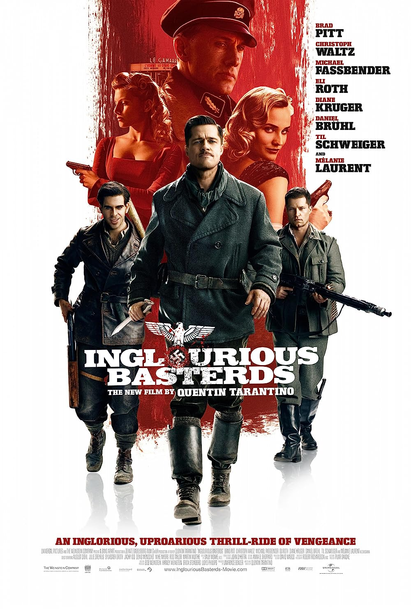

Inglourious Basterds is a 2009 war film[8] written and directed by
Quentin Tarantino, starring Brad Pitt, Christoph Waltz, Michael
Fassbender, Eli Roth, Diane Kruger, Daniel Brühl, Til Schweiger and
Mélanie Laurent. The film tells an alternate history story of two
plots to assassinate Nazi Germany's leadership—one planned by
Shosanna Dreyfus, a young French Jewish cinema proprietor, and the
other planned by the British but ultimately conducted solely by a
team of Jewish American soldiers led by First Lieutenant Aldo Raine.
Christoph Waltz co-stars as Hans Landa, an SS colonel in charge of
tracking down Raine's group. The title was inspired by Italian
director Enzo G. Castellari's 1978 Euro War film The Inglorious
Bastards, though Tarantino's film is not a remake of it.

Main Characters
Lt. Aldo Raine
Shosanna Dreyfus
Col. Hans Landa
Frederick Zoller
Bridget von Hammersmark
Plot Summary
In 1941, SS-Standartenführer Hans Landa interrogates French farmer
Perrier LaPadite, suspecting that the LaPadites are hiding a Jewish
family, the Dreyfuses, under their floorboards. LaPadite confirms
this to spare his own family, and Landa has the hidden family shot,
but allows Shosanna Dreyfus to escape.[9] Three years later, U.S.
Army Lieutenant Aldo Raine recruits Jewish-American soldiers to the
"Basterds", a black ops commando unit instilling fear among Nazis in
occupied France by killing and scalping them. The group includes
Sergeant Donny "The Bear Jew" Donowitz, rogue German Sergeant Hugo
Stiglitz, and Austrian-born translator Corporal Wilhelm Wicki. In
Germany, Adolf Hitler interviews a German soldier, who reveals that
Raine carved a swastika into his forehead after massacring his
squad. In Paris, Shosanna operates a cinema under the name
Emmanuelle Mimieux, and meets Fredrick Zoller, a famed German sniper
set to star in the Nazi propaganda film Stolz der Nation (Nation's
Pride). Infatuated with Shosanna, Zoller convinces Joseph Goebbels
to hold the film's premiere at her cinema. Landa, the premiere's
head of security, interrogates Shosanna but does not reveal if he
recognizes her. She plots with her Afro-French lover and
projectionist, Marcel, to kill the Nazi leaders in attendance.
British Commando Lieutenant Archie Hicox is recruited to lead an
attack on the premiere with the Basterds. Disguised as German
officers, Hicox, Stiglitz, and Wicki meet with German film star
Bridget von Hammersmark, an undercover Allied agent, at a tavern in
Nazi-occupied northern France. Hicox inadvertently draws the
attention of Wehrmacht Sergeant Wilhelm and Major Dieter Hellström,
first with his unusually accented German and then by using a British
hand gesture. Their cover is blown, and a gunfight ensues, killing
everyone except Wilhelm and a wounded von Hammersmark. Raine arrives
and negotiates for von Hammersmark's release, but she shoots
Wilhelm. Raine tortures von Hammersmark, believing she set his men
up, but she convinces him she is loyal and reveals Hitler will be
attending the premiere. Raine decides to carry out their plan with
himself, Donowitz, and Omar Ulmer. Investigating the tavern, Landa
finds von Hammersmark's shoe and a napkin with her signature. Raine,
Donowitz, and Ulmer infiltrate the premiere with timed explosives,
while Landa confronts von Hammersmark with her missing shoe before
strangling her to death. Raine and another Basterd, Smithson
Utivich, are discovered and taken prisoner, but Landa has Raine
contact his superior to cut a deal: Landa will allow the mission to
proceed in exchange for safe passage through the Allied lines, a
full pardon, and other privileges. During the screening, Zoller
slips away to the projection booth and berates Shosanna for
rejecting his advances, leading them to shoot each other dead. As
the film reaches its climax, Shosanna's spliced-in footage tells the
audience that they are about to be killed by a Jew. Having locked
the auditorium, Marcel ignites a pile of flammable film behind the
screen, setting the theater ablaze. Ulmer and Donowitz break into
the opera box, gunning down Hitler and Goebbels and firing into the
crowd until their explosives kill everyone inside the cinema,
including themselves. Landa and his radio operator drive Raine and
Utivich into Allied territory, where they surrender themselves.
However, Raine shoots the radio operator before ordering Utivich to
scalp him, and carves a swastika into Landa's forehead, professing
it to be his "masterpiece". Inglourious Basterds weaves multiple
storylines together. Lt. Aldo Raine and his Basterds embark on a
mission to kill and terrorize Nazis in German-occupied France.
Simultaneously, Shosanna Dreyfus seeks revenge against the Nazis for
her family's murder. The film builds towards a climactic event at a
movie premiere, where characters' paths intersect in unexpected
ways, leading to a thrilling and explosive finale.
Reception and Legacy
Inglourious Basterds received critical acclaim for its
unconventional storytelling, stellar performances, and Tarantino's
unique vision. Christoph Waltz's portrayal of Col. Hans Landa was
particularly praised, earning him an Academy Award for Best
Supporting Actor. The film has become a cultural touchstone and is
celebrated for its bold approach to historical fiction.
Famous Quotes
Character
Quote
Scene
Lt. Aldo Raine
"You know, Lieutenant, you're getting pretty good at that."
Various scenes
Col. Hans Landa
"That's a bingo! Is that the way you say it? That's a bingo?"
Card game scene
Shosanna Dreyfus
"My name is Shosanna Dreyfus, and this is the face of Jewish
vengeance!"
Projection room scene
Frederick Zoller
"I'm a hero. I'm a hero. I'm a hero."
Various scenes
Bridget von Hammersmark
"There's a special rung in hell reserved for people who waste
good scotch."
Undercover at the tavern
Summary
Inglourious Basterds is a thrilling and stylistically unique film that
reimagines history in Quentin Tarantino's signature fashion. Filled
with memorable characters and intense scenes, the movie explores the
themes of revenge, justice, and the unpredictability of war.